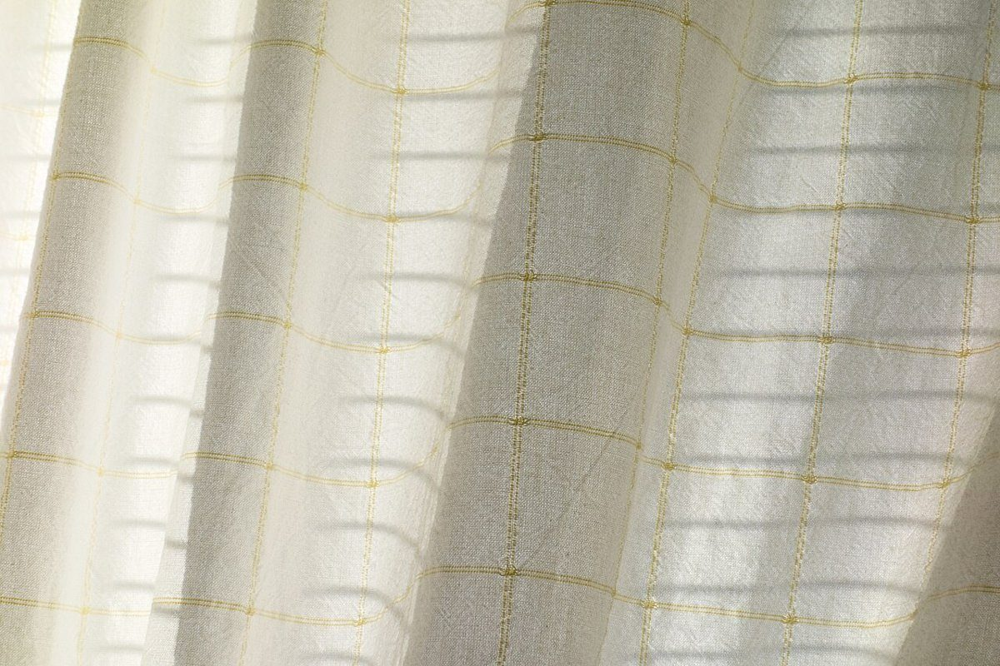

云々

制作側の連想
「云々」は、引用や会話の続きを省くときに使う言葉です。そこから制作側は「議事録の末尾の『以下、云々』」を連想し、このサイトを5ページ分の議事録の体裁にしました。お店の理念・由来とは無関係の、制作側の連想です。
| 件名 | Cafe 云々(うんぬん)のご案内 |
|---|---|
| 所在地 | 〒629-0321 京都府南丹市日吉町佐々江丸山9 |
| 連絡 | 電話なし / Instagram |
| 日時・営業時間 | 準備中 |
添付資料
添付資料(イメージ写真)
お店の写真ではなく、国外または撮影地不明のフリー素材です。雰囲気のイメージとして添付しています。




……以下、云々。